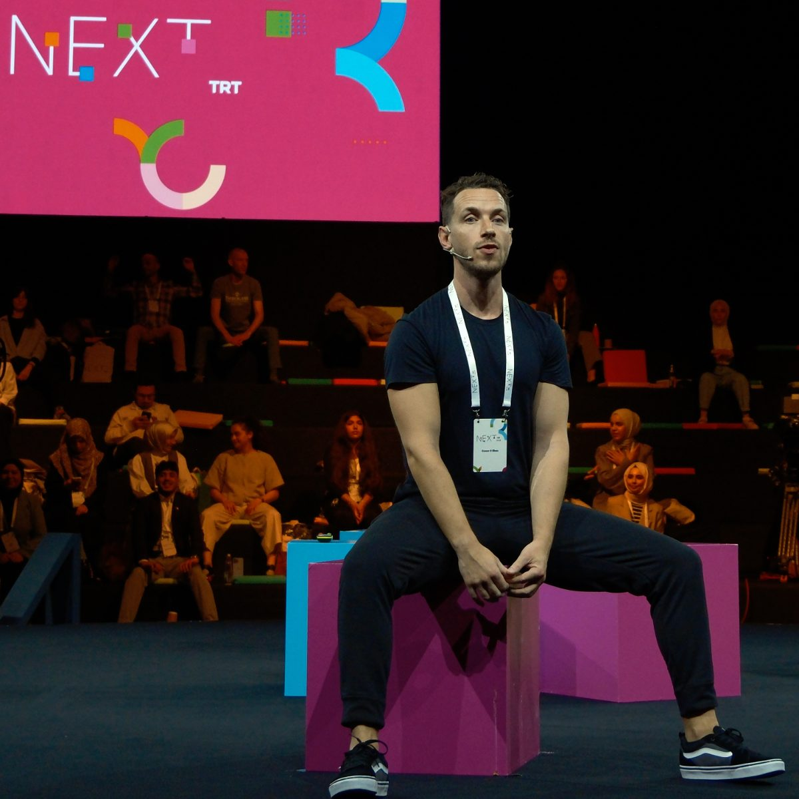

02 · My L5/S1 disc bulge story
Written by Conor O'Shea · Founder & Coach
I was told never to squat again.
A backbend injury caused an L5-S1 disc bulge, and doctors said squatting was over for good. After years of the wrong treatments, I built the Reset, Restore, Reinforce system now used with over 400 clients since 2011.
I damaged my L5-S1 doing a backbend, coaching a 6am client. It ruined my life for four years.
My doctor told me never to squat again. I was 28, a personal trainer, and it felt like someone had canceled my entire future.
I spent thousands on physios and coaches. It all helped for a while, then the pain kept coming back.
Eventually I found the right people, the ones who actually fixed it, plus thousands of hours of my own research. That's when I realized the low back isn't just a physical issue - it's also about how I respond to pain.
The worst part of those four years wasn't the pain itself. It was the anxiety, the fear of what it would do to my life, my career, my ability to provide as I got older.
That's what pushed me to help other people rehab their own backs once I'd solved mine.
Everything here is the piece of the puzzle I wish someone had handed me back in 2018, when I first hurt my back - refined through the years since as I keep coaching and learning from every new client. I built the process I've now used with over 400 clients since 2011.
Three phases, done in order. One outcome: your back stops running your life.